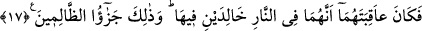

âlemlerin Rabbi olan Allah’tan korkarım” demektedir. Târif lamı ahd için olmak üzere
insan kelimesinden Ebû Cehil kasdedilmişse, bu durumda âyet-i kerimedeki “inkâr et”
ifâdesi; yâni “küfür hâli üzerinde bulunmakta devam et” anlamına gelir. Sonra o küfür
üzerinde sebat edince, şirk fidanı onun kalbinin zemininde muhkem oldu. “Ben senden
uzağım” demesi olayı İblis’in Ebû Cehil’e Bedir savaşı günü: “Hani şeytan onlara
yaptıklarını güzel gösterdi de: Bugün insanlardan size galip gelecek kimse yoktur,
şüphesiz ben de sizin yardımcınızım, dedi. Fakat iki ordu birbirini görünce ardına
döndü ve: Ben sizden uzağım, ben sizin görmediklerinizi (melekleri) görüyorum;
Allah’ın azâbı şiddetlidir, dedi.” (el-Enfal, 8/48) sözünden ibârettir. Yâni
Peygamberimiz’in yönetimindeki müslümanlarla müşrikler savaşa tutuştular. İblis,
Cebrail (a.s.)’ı Peygamberimiz Hz. Muhammed (s.a.) ile birlikte görünce ondan korktu
ve perişan olup uzaklaşıp gitti. Âlimlerin bir kısmı şöyle demişlerdir: “Allah’tan
korkarım” demesi lânetlenmiş şeytanın yalanlarından biridir. Çünkü gerçekten o
Allah’tan korkmuş ve bu sözü doğrulukla söylemiş olsaydı, bundan sonra da sonucundan
korkulacak ve tehlikeye götürecek işlere asla devam etmezdi. İnsanları aldatmak için
kıyamet gününe kadar mühlet istediği halde şeytanın: “Allah’tan korkarım” demesi nasıl
doğru olabilir?
Ebu’l-Leys demiştir ki: İblis “Allah’tan korkarım” sözünü istihzâ ve Ebû Cehil ile
alay etmek için söylemiştir. Onu pişmanlığa ve yandım, demeye sürüklemek için demiş
olması da uzak bir ihtimal değildir.
Fakîr (Bursevî) der ki: Şeytan -acil olarak kendisine mühlet verilmiş olsa da- bazı
konularda Allah’ın azamet ve celâl sıfatlarının bilincine erip muâheze edilmekten
korunmak için O’ndan korkmaktadır. Şüphe yok ki, Allah’ın kahrının emareleri
göründüğünde O’ndan korkmayan yoktur. Şu âyet-i kerimede anlatılanların hâlini bir
görsene: “O gemiye şiddetli bir fırtına gelip çatar, her yerden onlara dalgalar
hücum eder ve onlar çepeçevre kuşatıldıklarını anlar da dini yalnız Allah’a hâlis
kılarak: Andolsun eğer bizi bundan kurtarırsan mutlaka şükredenlerden olacağız,
diye Allah’a yalvarırlar.” (Yunus, 10/22) Nitekim, yol kesen eşkıyalar, adam öldüren
kimseler bile çoğunlukla Allah’ın kendisini cezâlandıracağından korktuğu halde bu
yaptıklarını yaparlar.
17. Nihâyet ikisinin de sonu, içinde ebedî kalacakları ateş olacaktır. İşte bu,
zâlimlerin cezâsıdır.
“Nihâyet ikisinin de sonu, içinde ebedî kalacakları ateş olacaktır.” Yâni şeytanın ve
bu insanın âkıbetleri hiç ayrılmamak üzere devamlı kalacakları cehennem olacaktır. Bu
cümledeki âkıbetühüma lafzı kâne fiilinin haberi olarak nasbedilmiştir. İsmi ise